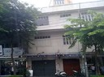
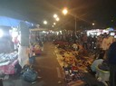
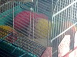

Resor · 2010-10-05 @ 20:18:25 Allmänt Permalink
Kvarteret Khao San
Omtumlad av intryck. Lukten av kryddor, stekos och sopor. Mest goda dofter faktiskt, när många äter runt gathörnen. Jag har inte sett en ”riktig” stad i Thailand förut, där man kan gå på bakgator utan att se en enda turist.
Bakgator ja, tveksamt var gator och hus börjar och slutar ibland. Det kan vara en gång genom ett hus, eller en passage mellan två byggnader. När jag tittar upp är det generationers lager av konstruktioner mellan husen som skymmer himlen. Markiser, presenningar, plåtar, rostiga järnbalkar omlindade av olika slags kablar till fläktar och lampor. Husen växer samman! Inte bara i luften utan livet växer, eller snarare flyter mellan inne och ute. Utan klar gräns.
Vardagsrummet glider ut över gatan, och gatan sköljer in i vardagsrummet/butiken. Svårt att se om det är en affärslokal eller privatbostad ibland. Det är förmodligen både och. Barnet sover på gatan, morfar ligger i soffan och tittar på TV, en kvinna sitter och syr och någon lagar mat. Jag vet inte om man får gå in och sätta sig, är det en restaurang, eller är det deras köksbord?
Men det är ett sjudande liv. Förmodligen en kamp för brödfödan och man lever kanske i sin sysselsättning. Mest på trottoaren.
Elen ja, det gamla vanliga, en sladd i taget när den behövs tills det ser ut som skatbon längs väggar och mellan hus. E-on skulle få gåshud när stora träd vuxit ihop med sladdnystan, men det funkar! Så typisk scen i ”Beach” när städerskan kör svabben mellan elsladdarna så det blixtrar.
Råttmöte, ett riktigt litet fetto i mörkret (litet om det varit en katt). Vi tittar på varandra en stund innan han klafsar iväg. Det finns nån storlek på rådisar där dom inte är så rädda längre verkar det som.
Nu är det då så att ögonkontakt undvikes gärna. En försäljare som får ögonkontakt hugger så hårt. Eller som, …hm..personen med långt hår och smink, som frågar var jag kommer ifrån och sätter handen i skrevet (på mig, nota bene). Tack, men nej tack till det då da.
Priser är konstiga. Läsk dyrt, grillspett billigt. Jag åt något …segt som en kvinna menade var inifrån en kyckling. Sen ville jag köpa två tommuggar till rummet. Och insåg att jag fick betala fullpris för kaffe för muggarna.
Det är inte lätt att veta när man ska vara på sin vakt så här i början.
Det kan vara så att jag ska öva på att hålla i pengar. Inte köra ”Jag vill betala och göra rätt för mig”, utan snarare ”Ska du ha pengar av mig ska du ha ett gott skäl och anstränga dig”
Jag vandrar längs marknaden på natten. Allt finns. Vilken återanvändning! Ett berg av gamla fjärrkontroller, begagnade skor mm mm kvarter efter kvarter.
Bakgator ja, tveksamt var gator och hus börjar och slutar ibland. Det kan vara en gång genom ett hus, eller en passage mellan två byggnader. När jag tittar upp är det generationers lager av konstruktioner mellan husen som skymmer himlen. Markiser, presenningar, plåtar, rostiga järnbalkar omlindade av olika slags kablar till fläktar och lampor. Husen växer samman! Inte bara i luften utan livet växer, eller snarare flyter mellan inne och ute. Utan klar gräns.
Vardagsrummet glider ut över gatan, och gatan sköljer in i vardagsrummet/butiken. Svårt att se om det är en affärslokal eller privatbostad ibland. Det är förmodligen både och. Barnet sover på gatan, morfar ligger i soffan och tittar på TV, en kvinna sitter och syr och någon lagar mat. Jag vet inte om man får gå in och sätta sig, är det en restaurang, eller är det deras köksbord?
Men det är ett sjudande liv. Förmodligen en kamp för brödfödan och man lever kanske i sin sysselsättning. Mest på trottoaren.


Elen ja, det gamla vanliga, en sladd i taget när den behövs tills det ser ut som skatbon längs väggar och mellan hus. E-on skulle få gåshud när stora träd vuxit ihop med sladdnystan, men det funkar! Så typisk scen i ”Beach” när städerskan kör svabben mellan elsladdarna så det blixtrar.
Råttmöte, ett riktigt litet fetto i mörkret (litet om det varit en katt). Vi tittar på varandra en stund innan han klafsar iväg. Det finns nån storlek på rådisar där dom inte är så rädda längre verkar det som.
Nu är det då så att ögonkontakt undvikes gärna. En försäljare som får ögonkontakt hugger så hårt. Eller som, …hm..personen med långt hår och smink, som frågar var jag kommer ifrån och sätter handen i skrevet (på mig, nota bene). Tack, men nej tack till det då da.
Priser är konstiga. Läsk dyrt, grillspett billigt. Jag åt något …segt som en kvinna menade var inifrån en kyckling. Sen ville jag köpa två tommuggar till rummet. Och insåg att jag fick betala fullpris för kaffe för muggarna.
Det är inte lätt att veta när man ska vara på sin vakt så här i början.
Det kan vara så att jag ska öva på att hålla i pengar. Inte köra ”Jag vill betala och göra rätt för mig”, utan snarare ”Ska du ha pengar av mig ska du ha ett gott skäl och anstränga dig”


Jag vandrar längs marknaden på natten. Allt finns. Vilken återanvändning! Ett berg av gamla fjärrkontroller, begagnade skor mm mm kvarter efter kvarter.


Fast de små igelkottarna målade i neonfärger var inte kul att se ☹